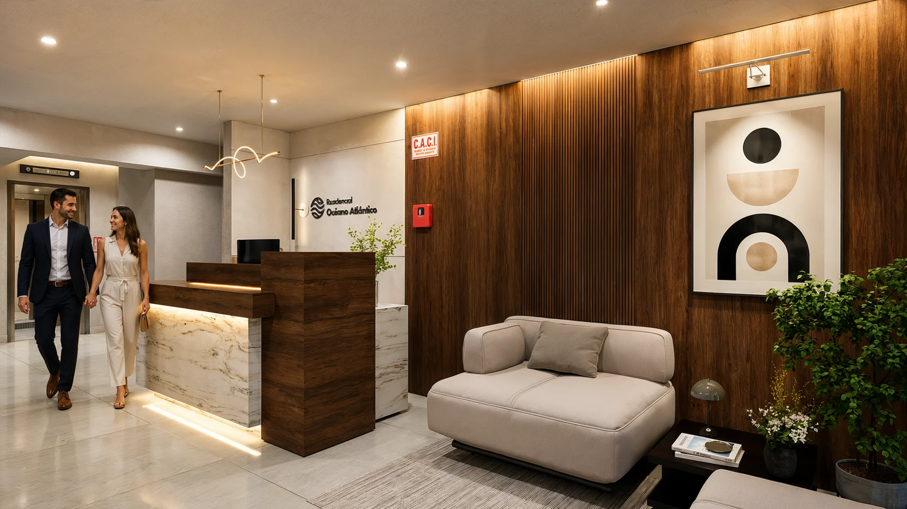

QUIÉNES SOMOS
Distintas miradas.
Una experiencia.
Somos Rvisioon. Conectamos arquitectura y tecnología para que un proyecto inmobiliario se pueda comprender, recorrer y presentar con profundidad.
UN EQUIPO MULTIDISCIPLINARIO
La calidad se construye
en conjunto.
Arquitectura, imagen y tecnología. Desliza para descubrir cómo se conectan nuestras especialidades.
NUESTRA FORMA DE MIRAR
La primera impresión importa.
Lo que descubres después, también.
Una imagen atrae. La información y la interacción permiten seguir explorando. Cuidamos ambas partes.
ANTES DE CONVERSAR
Resolvamos
tus preguntas.
¿Qué diferencia a Rvisioon?
Integramos calidad cinemática, navegación e información del proyecto. Las distintas especialidades del equipo trabajan sobre una misma experiencia.
¿Qué necesitamos para comenzar?
Planos arquitectónicos, cuadros de acabados, brochure e identidad visual del proyecto.
¿Cuánto tarda el desarrollo?
30 días hábiles desde que recibimos los materiales para desarrollar el showroom.
¿El dashboard está incluido?
Sí. Se incluye al contratar el showroom y reúne herramientas para el equipo inmobiliario.
¿Dónde puedo conocer un showroom?
En Proyectos puedes acceder a los showrooms terminados. También podemos recorrer contigo la experiencia en una presentación.
EL SIGUIENTE PASO
Conozcamos tu proyecto.
Cuéntanos qué quieres comunicar y qué necesita tu equipo para presentarlo.
Hablemos de tu proyecto ↗